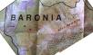
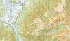
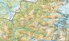
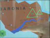

The Secret of Killimooin – Die Verwegenen Vier auf heißer Spur
Killimooin (Baronia) in NZ's Secret Series
In dieser Episode entführt uns Enid Blyton in das geheimnisvolle Land Baronia. Erwähnt wird es bereits im zweiten Band der Reihe, The Secret of Spiggy Holes – Die verwegenen Vier bewähren sich, wo Prinz Paul von Baronia befreit wird. In The Secret of Killimooin – Die Verwegenen Vier auf heißer Spur reisen nun die Arnold-Kinder gleich zu Beginn in jenes Land, in welchem sich fortan die gesamte Handlung abspielt. Es ist ein in weiten Teilen gebirgiges, mit Wald bedecktes und sehr wildes Land. Gut möglich, dass Enid Blyton sich von Rumänien hat inspirieren lassen, zumindest klingt der Name eines von Pauls Bodyguards – Pilescu – rumänisch.
Wie in der Buchvorlage geht auch in der Verfilmung gleich zu Beginn auf die Reise. Dabei wird als erstes folgende Karte des Reisezieles auf dem Küchentisch ausgebreitet: [1]
 |
{kind=link}
Diese Karte ist in mehrfacher Hinsicht interessant: Sie zeigt eine Gegend, die überwiegend gebirgig ist, aber auch flaches Land zu Füssen der Berge aufweist, wo einige Städte liegen. Dies entspricht genau der Beschreibung von Enid Blyton. Während die Kinder im Buch im «Killimooin Castle» residieren, reicht im Film die einfache Berghütte namens «Killimooin Lodge» (oder «King's lodge» [2]), die sich aber der Buchvorlage entsprechend in den Bergen befindet (oberhalb des zweiten «o» im Schriftzug «KILLIMOOIN»). Die aufgeführen Ortsnamen «Boron», «Sandon» und «Fitges» sind im Buch nicht vorhanden, stattdessen werden andere Städte erwähnt: The children read out the names of the towns they flew over. ‘Ortanu, Tarribon, Lookinon, Brutinlin – what funny names!’ [3].
Diese Orte sind aber weder im Buch noch im Film von Bedeutung. Stattdessen spielt sich die Handlung in der wilden und unberührten Gebirgswelt von Killimooin ab, die im Buch wie folgt beschrieben wird: ‘These mountains are a weird shape,’ said the little Prince. ‘Killimooin mountains form an almost unbroken circle – and in the midst of them, in a big valley, is the Secret Forest.’ [1]
Ein Gebirge, das wie ein «fast ununterbrochener Kreis» aussieht, lässt sich wohl auch in den neuseeländischen Alpen schwerlich finden. Trotzdem umschliesst Killimooin auf dieser Karte zumindest zum Teil ein entlegenes Tal, wo sich der «Secret Forest» befindet, wie Peggy in der entsprechenden Szene zu Beginn des Films erläutert. [1, 2]
Die Karte ist tatsächlich echt; es ist die neuseeländische Topo-Karte 1:50’000, deren Namensgut entsprechend bearbeitet wurde! [4] Die betreffende Region liegt westlich des Aoraki / Mount Cook in einer völlig unwegsamen Gegend, durchaus passend also zur Buchvorlage. Das Gebirge heisst in Wirklichkeit Copland Range und auf die vermutlich sehr schwer zu besteigenden Gipfel scheinen keinerlei Wege zu führen, genauso wenig wie in das südlich davon verlaufende Tal des Architect Creek. Auch die in der Karte eingetragene Stelle der «Killimooin Lodge» zu erreichen, dürfte äusserst kompliziert sein, denn diese liegt auf gut 1000 m am von Wasserfällen geprägten Ohinetamatea River.
| NZTopo 1:50'000  |
NZTopo 1:250'000  |
{kind=link}
{kind=link}
Gefilmt wurde natürlich nicht in dieser unzugänglichen Gegend, zumal sich ein Grossteil dieser Episode ohnehin im Untergrund abspielt. Dort, im Reiche des Clovis Monk, taucht auf einem Bildschirm eine weitere, stark abstrahierte Karte auf, welche dieselben Örtlichkeiten wie die obige enthält, sowie den aktuellen Standort anzeigt. Der Fluss ist allerdings übertrieben breit dargestellt. [1]
 |
{kind=link}
Grundlagen
[1] Die Verwegenen Vier auf heißer Spur aus: Enid Blyton: Die Verwegenen Vier. Die komplette Serie auf 4 DVDs. 2011 MORE Entertainment Rights GmbH&Co. KG
[2] Wire, Helen: The Secret of Killimooin (Screenplay novelisation), chapter 1. London 1998
[3] Blyton, Enid: The Secret of Killimooin, chapter 4. London 1943 (2002)
[4] Topo-Karten von Land Information New Zealand (NZ): https://www.linz.govt.nz/